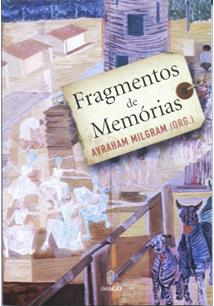
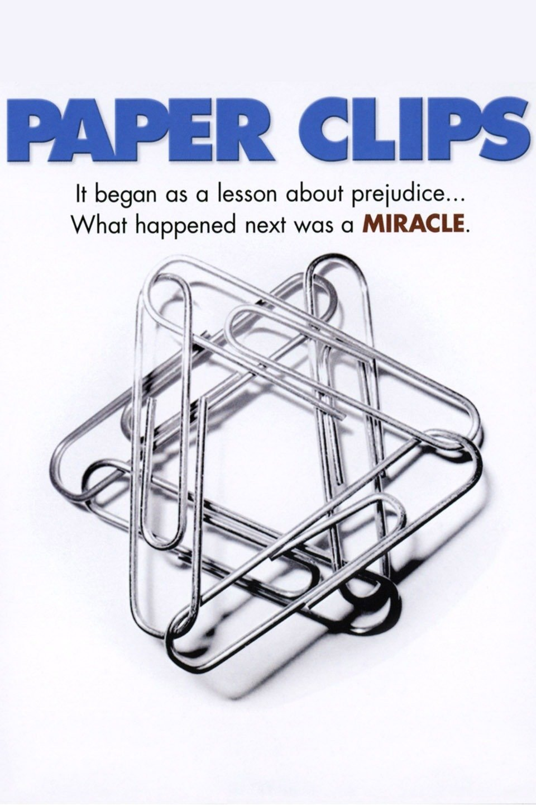
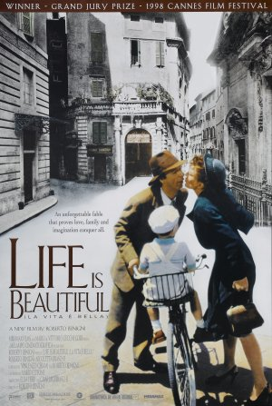
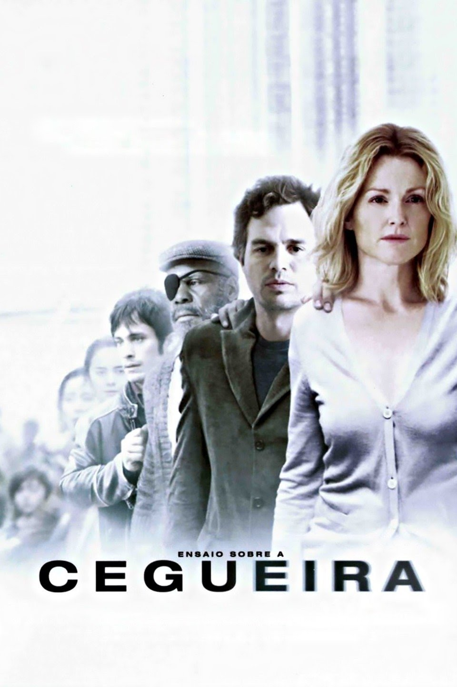

Livros
Pássaros da Liberdade
Carla Bassanezi Pinsky

Fragmentos de Memória
Avraham Milgram
Como curar um fanático
Amós Oz
Sapiens - Uma breve história da humanidade
Yuval Noah Harari
Quando eu voltar a ser criança
Janusz Korczak

A Menina que Roubava Livros
Markus Zusak

Entre amigos
Amós Oz
Pequeno manual antirracista
Djamila Ribeiro
O Apanhador no Campo de Centeio
J. D. Salinger
1984
George Orwell
É isto um homem?
Primo Levi
Hibisco roxo
Chimamanda Ngozi Adichie

Catch 67
Micah Goodman
Filmes
Insurreição
2001
Yaldey Hashemesh
2007

Paper Clips
2004
Ver se estou sorrindo
2007
Capitão Fantástico
2016
Na natureza selvagem
2007

Sociedade dos Poetas Mortos
1999
O contador de histórias
2009
Sociedade Alternativa
2005
Jojo Rabbit
2020
Um Violinista no Telhado
1971

A vida é bela
1997
Chave de Sarah
2010
Escritores da Liberdade
2007
Os Falsários
2007
The Bubble
2006
Paradise Now
2005
Exuberante Deserto
2006

Ensaio sobre a cegueira
2008
Cidade de Deus
2002
Devil Next Door
2019
Músicas
Textos de chaverimot
Durante a nossa machane kaitz, os chanichim da machane Derech LaShalom (Caminho
para a Paz) participaram de um programa da Agência Judaica chamado "Hate is not my game". Neste marco,
realizamos uma partida de futebol contra a seleção masculina de refugiados venezuelanos, que havia
terminado em terceiro lugar no Mundialito de Imigrantes e Refugiados, realizado em Curitiba, em 2018. O
esporte foi um meio através do qual nós pudemos estabelecer um diálogo entre jovens judeus do Habonim Dror
e uma população com a qual não temos quase nenhum contato, em atividades educativas planejadas pelos
nossos madrichim após a partida. Pudemos conhecer um ao outro, quebrar estigmas e possíveis preconceitos,
e falar sobre temas com os quais nos identificamos: ser minoria em um país, antissemitismo, xenofobia e
também sobre a receptividade positiva com a qual a grande maioria da população brasileira trata judeus e
venezuelanos no país. Foi uma experiência muito marcante para todos nós, que sem dúvida gostaríamos de
repeti-la.
O jogo? Ah! Terminou 2x1 para os venezuelanos, de virada. Será que vem revanche por aí? #hateisnotmygame
O jogo? Ah! Terminou 2x1 para os venezuelanos, de virada. Será que vem revanche por aí? #hateisnotmygame
Sua contribuição para o nosso movimento foi do tamanho da sua genialidade.
Aprendemos contigo a estar sempre contra o fanatismo e a dialogar com o diferente; chegamos um passo mais
perto de descobrir como curar um fanático.
Nos apaixonamos vezes e mais vezes pela literatura hebraica, tão bem representada na sua figura. Vivenciamos com brilho nos olhos as singelas histórias do dia-a-dia do kibbutz, aquele ambiente onde paira, sempre, uma certa paz. Um ambiente já tão incrustado na nossa história, mas que você nos mostrou com outros olhos. Lemos as histórias desse lugar sentindo a presença da sua companhia, como se estivéssemos entre amigos.
A caixa preta da política israelense foi por você entreaberta, revelando tantos segredos, romances, histórias. Permeamos e revivemos a História do Estado de Israel, que se mistura tanto com a tua própria história, repleta de amor e de trevas, mas sobretudo de sentimento. A língua hebraica e a cultura judaica mais uma vez reafirmaram nossos valores milenares de paz e justiça, porque você soube representar, tão bem, aos judeus e às palavras.
De repente, você se retirou para as profundezas do bosque. Nos deixou. Mas não diremos noite, como nos ensinaram Teo e Noa. Cabe a nós agora manter vivo seu legado, sua grandeza.
Você foi um gigante.
Obrigado por tudo, Amos.
"Eles pensam que compromissos são desonestos, oportunistas, humilhantes. No meu vocabulário, a palavra 'compromisso' é um sinônimo da palavra 'vida'. O oposto de compromisso não é integridade. O oposto de compromisso não é idealismo. O oposto de compromisso é o fanatismo e a morte." Amos Os Z''L (1939-2018)
Nos apaixonamos vezes e mais vezes pela literatura hebraica, tão bem representada na sua figura. Vivenciamos com brilho nos olhos as singelas histórias do dia-a-dia do kibbutz, aquele ambiente onde paira, sempre, uma certa paz. Um ambiente já tão incrustado na nossa história, mas que você nos mostrou com outros olhos. Lemos as histórias desse lugar sentindo a presença da sua companhia, como se estivéssemos entre amigos.
A caixa preta da política israelense foi por você entreaberta, revelando tantos segredos, romances, histórias. Permeamos e revivemos a História do Estado de Israel, que se mistura tanto com a tua própria história, repleta de amor e de trevas, mas sobretudo de sentimento. A língua hebraica e a cultura judaica mais uma vez reafirmaram nossos valores milenares de paz e justiça, porque você soube representar, tão bem, aos judeus e às palavras.
De repente, você se retirou para as profundezas do bosque. Nos deixou. Mas não diremos noite, como nos ensinaram Teo e Noa. Cabe a nós agora manter vivo seu legado, sua grandeza.
Você foi um gigante.
Obrigado por tudo, Amos.
"Eles pensam que compromissos são desonestos, oportunistas, humilhantes. No meu vocabulário, a palavra 'compromisso' é um sinônimo da palavra 'vida'. O oposto de compromisso não é integridade. O oposto de compromisso não é idealismo. O oposto de compromisso é o fanatismo e a morte." Amos Os Z''L (1939-2018)
Neste Yom HaShoá, escolhemos falar sobre responsabilidade. Como chaverim e
chaverot do Habonim Dror, na atualidade, não podemos deixar de nos sentirmos muito responsáveis frente a
este tema.
Em outros tempos, jovens de tnuot como nós tinham a responsabilidade de erguer a cabeça e resistir frente à sociedade da época. A maneira como o fariam variava: educando, escondendo um pão ou pegando em armas, resistir não deixou de ser uma opção para a juventude judaica. Hoje, as nossas ações são outras, mas a essência da responsabilidade que temos, talvez não.
Ao pensarmos nessa resistência, fazendo parte de um movimento juvenil, é indispensável pensarmos também na nossa responsabilidade frente a educação de nossos chanichim e chanichot. Acreditamos que a educação deve garantir um espaço onde a criança se sinta instigada e confortável a questionar, fazer perguntas para tirar suas dúvidas, se sinta interessada pelo aprendizado. E também por isso, nos envolvemos de forma integral no processo educativo de cada um dos nossos chaverim. Temos como uma de nossas inspirações um grande educador, Janus Korczak, que prezava pelo mundo da criança, sua autonomia como ferramenta para seu desenvolvimento e também a compreensão das características e necessidades da criança como um “ser”, e não um “vir a ser”. Esse homem lutou pelo que acreditava até seu último momento de vida, momento esse em que manteve suas crianças de cabeça erguida, com olhos nos olhos dos outros até o fim. Ele teve a noção não somente do seu papel como educador, mas também como ser humano responsável por resistir e por fazer a diferença no mundo.
Ao tratarmos da tema "Shoá" buscamos manter nossa essência educativa ao falarmos sobre vidas. Sim, vida: vida judaica na Europa; importância da liberdade; direitos iguais; dignidade humana. Quando nos voltamos apenas para o tema da morte na Segunda Guerra Mundial, acabamos nos perdendo e deixando de lado grandes histórias que foram vividas e essas sim são as partes importantes; aquilo que foi vivido e não o que, infelizmente, acabou por ser interompio.
Ao lutar para manter viva a memória e cumpri com a nossa responsabilidade frente a Shoa, precisamos falar de humanização, focando-nos em histórias pessoais que sem dúvida tiveram enorme valor, seja qual foi ou quando foi o seu fim. Como jovens, ainda hoje temos a responsabilidade de lutar por nossos ideais de igualdade e respeito mútuo, pois vivemos em uma sociedade, que apesar de muito diferente do que era em 1940 parece ainda guardar valores semelhantes.
Ale VeHagshem e Zichronam LeBrachá
Em outros tempos, jovens de tnuot como nós tinham a responsabilidade de erguer a cabeça e resistir frente à sociedade da época. A maneira como o fariam variava: educando, escondendo um pão ou pegando em armas, resistir não deixou de ser uma opção para a juventude judaica. Hoje, as nossas ações são outras, mas a essência da responsabilidade que temos, talvez não.
Ao pensarmos nessa resistência, fazendo parte de um movimento juvenil, é indispensável pensarmos também na nossa responsabilidade frente a educação de nossos chanichim e chanichot. Acreditamos que a educação deve garantir um espaço onde a criança se sinta instigada e confortável a questionar, fazer perguntas para tirar suas dúvidas, se sinta interessada pelo aprendizado. E também por isso, nos envolvemos de forma integral no processo educativo de cada um dos nossos chaverim. Temos como uma de nossas inspirações um grande educador, Janus Korczak, que prezava pelo mundo da criança, sua autonomia como ferramenta para seu desenvolvimento e também a compreensão das características e necessidades da criança como um “ser”, e não um “vir a ser”. Esse homem lutou pelo que acreditava até seu último momento de vida, momento esse em que manteve suas crianças de cabeça erguida, com olhos nos olhos dos outros até o fim. Ele teve a noção não somente do seu papel como educador, mas também como ser humano responsável por resistir e por fazer a diferença no mundo.
Ao tratarmos da tema "Shoá" buscamos manter nossa essência educativa ao falarmos sobre vidas. Sim, vida: vida judaica na Europa; importância da liberdade; direitos iguais; dignidade humana. Quando nos voltamos apenas para o tema da morte na Segunda Guerra Mundial, acabamos nos perdendo e deixando de lado grandes histórias que foram vividas e essas sim são as partes importantes; aquilo que foi vivido e não o que, infelizmente, acabou por ser interompio.
Ao lutar para manter viva a memória e cumpri com a nossa responsabilidade frente a Shoa, precisamos falar de humanização, focando-nos em histórias pessoais que sem dúvida tiveram enorme valor, seja qual foi ou quando foi o seu fim. Como jovens, ainda hoje temos a responsabilidade de lutar por nossos ideais de igualdade e respeito mútuo, pois vivemos em uma sociedade, que apesar de muito diferente do que era em 1940 parece ainda guardar valores semelhantes.
Ale VeHagshem e Zichronam LeBrachá